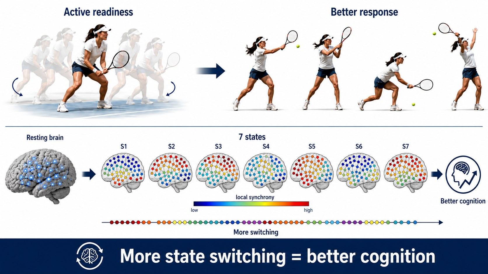

Computational Neuroscientist
AI for neuroscience, medical applications & industry.
entropy0.847
metastabilityHIGH
brain states7 clusters
firing nodes0
scroll
I'm a machine learning engineer with a research background in computational neuroscience, currently completing my master's in Brain and Cognition at Pompeu Fabra University.
My thesis, supervised by Prof. Gustavo Deco and Dr. Rubén Moreno-Bote, focuses on measuring whole-brain metastability from fMRI using a novel vortex-space approach, connecting it to the Maximum Occupancy Principle, and investigating its relationship with human cognitive flexibility.
Prior to my master's, I completed a Bachelor's degree in Industrial Engineering at Sharif University of Technology, where I focused on the application of reinforcement learning for inventory optimization.
I have strong experience developing biomedical signal processing and machine learning solutions for computational neuroscience and healthcare applications, using modalities such as EEG, EMG, fMRI, and medical imaging data. I also have experience in full-stack development and production deployment of deep learning solutions and LLM-based agentic AI systems using FastAPI, Streamlit, Docker, AWS, and LangChain.
From July to September 2026, I will join the Digital Health Unit at the Barcelona Supercomputing Center as an ML Engineering Intern, contributing to deep-learning-based detection and classification of cardiac events.
📍 Barcelona, Spain · 🇬🇧 English fluent

Machine learning & neuroscience expertise + production software skills.